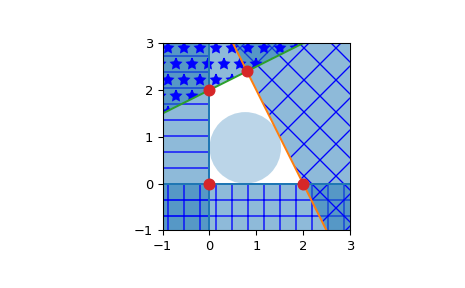

scipy.spatial.HalfspaceIntersection¶
-
class
scipy.spatial.HalfspaceIntersection(halfspaces, interior_point, incremental=False, qhull_options=None)¶ Halfspace intersections in N dimensions.
New in version 0.19.0.
- Parameters
- halfspacesndarray of floats, shape (nineq, ndim+1)
Stacked Inequalities of the form Ax + b <= 0 in format [A; b]
- interior_pointndarray of floats, shape (ndim,)
Point clearly inside the region defined by halfspaces. Also called a feasible point, it can be obtained by linear programming.
- incrementalbool, optional
Allow adding new halfspaces incrementally. This takes up some additional resources.
- qhull_optionsstr, optional
Additional options to pass to Qhull. See Qhull manual for details. (Default: “Qx” for ndim > 4 and “” otherwise) Option “H” is always enabled.
- Raises
- QhullError
Raised when Qhull encounters an error condition, such as geometrical degeneracy when options to resolve are not enabled.
- ValueError
Raised if an incompatible array is given as input.
Notes
The intersections are computed using the Qhull library. This reproduces the “qhalf” functionality of Qhull.
References
- R9b902253b317-Qhull
- R9b902253b317-1
S. Boyd, L. Vandenberghe, Convex Optimization, available at http://stanford.edu/~boyd/cvxbook/
Examples
Halfspace intersection of planes forming some polygon
>>> from scipy.spatial import HalfspaceIntersection >>> halfspaces = np.array([[-1, 0., 0.], ... [0., -1., 0.], ... [2., 1., -4.], ... [-0.5, 1., -2.]]) >>> feasible_point = np.array([0.5, 0.5]) >>> hs = HalfspaceIntersection(halfspaces, feasible_point)
Plot halfspaces as filled regions and intersection points:
>>> import matplotlib.pyplot as plt >>> fig = plt.figure() >>> ax = fig.add_subplot('111', aspect='equal') >>> xlim, ylim = (-1, 3), (-1, 3) >>> ax.set_xlim(xlim) >>> ax.set_ylim(ylim) >>> x = np.linspace(-1, 3, 100) >>> symbols = ['-', '+', 'x', '*'] >>> signs = [0, 0, -1, -1] >>> fmt = {"color": None, "edgecolor": "b", "alpha": 0.5} >>> for h, sym, sign in zip(halfspaces, symbols, signs): ... hlist = h.tolist() ... fmt["hatch"] = sym ... if h[1]== 0: ... ax.axvline(-h[2]/h[0], label='{}x+{}y+{}=0'.format(*hlist)) ... xi = np.linspace(xlim[sign], -h[2]/h[0], 100) ... ax.fill_between(xi, ylim[0], ylim[1], **fmt) ... else: ... ax.plot(x, (-h[2]-h[0]*x)/h[1], label='{}x+{}y+{}=0'.format(*hlist)) ... ax.fill_between(x, (-h[2]-h[0]*x)/h[1], ylim[sign], **fmt) >>> x, y = zip(*hs.intersections) >>> ax.plot(x, y, 'o', markersize=8)
By default, qhull does not provide with a way to compute an interior point. This can easily be computed using linear programming. Considering halfspaces of the form \(Ax + b \leq 0\), solving the linear program:
\[ \begin{align}\begin{aligned}max \: y\\s.t. Ax + y ||A_i|| \leq -b\end{aligned}\end{align} \]With \(A_i\) being the rows of A, i.e. the normals to each plane.
Will yield a point x that is furthest inside the convex polyhedron. To be precise, it is the center of the largest hypersphere of radius y inscribed in the polyhedron. This point is called the Chebyshev center of the polyhedron (see [R9b902253b317-1] 4.3.1, pp148-149). The equations outputted by Qhull are always normalized.
>>> from scipy.optimize import linprog >>> from matplotlib.patches import Circle >>> norm_vector = np.reshape(np.linalg.norm(halfspaces[:, :-1], axis=1), ... (halfspaces.shape[0], 1)) >>> c = np.zeros((halfspaces.shape[1],)) >>> c[-1] = -1 >>> A = np.hstack((halfspaces[:, :-1], norm_vector)) >>> b = - halfspaces[:, -1:] >>> res = linprog(c, A_ub=A, b_ub=b) >>> x = res.x[:-1] >>> y = res.x[-1] >>> circle = Circle(x, radius=y, alpha=0.3) >>> ax.add_patch(circle) >>> plt.legend(bbox_to_anchor=(1.6, 1.0)) >>> plt.show()
- Attributes
- halfspacesndarray of double, shape (nineq, ndim+1)
Input halfspaces.
- interior_point :ndarray of floats, shape (ndim,)
Input interior point.
- intersectionsndarray of double, shape (ninter, ndim)
Intersections of all halfspaces.
- dual_pointsndarray of double, shape (nineq, ndim)
Dual points of the input halfspaces.
- dual_facetslist of lists of ints
Indices of points forming the (non necessarily simplicial) facets of the dual convex hull.
- dual_verticesndarray of ints, shape (nvertices,)
Indices of halfspaces forming the vertices of the dual convex hull. For 2-D convex hulls, the vertices are in counterclockwise order. For other dimensions, they are in input order.
- dual_equationsndarray of double, shape (nfacet, ndim+1)
[normal, offset] forming the hyperplane equation of the dual facet (see Qhull documentation for more).
- dual_areafloat
Area of the dual convex hull
- dual_volumefloat
Volume of the dual convex hull
Methods
add_halfspaces(halfspaces[, restart])Process a set of additional new halfspaces.
close()Finish incremental processing.